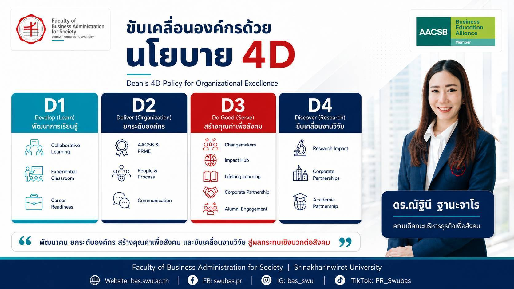
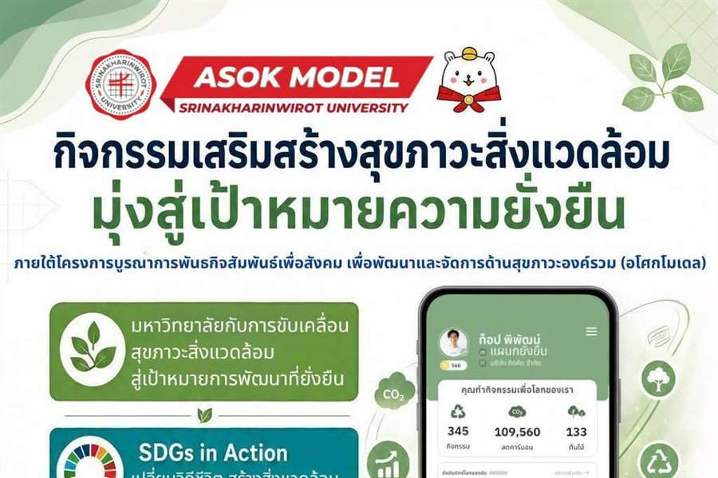
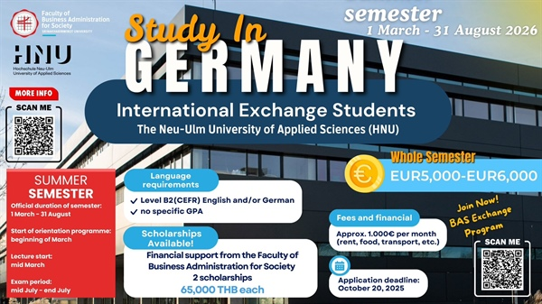
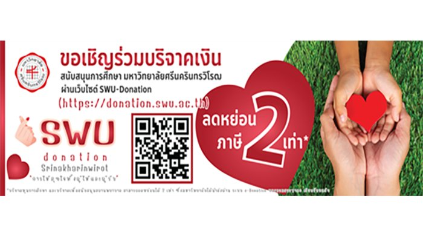
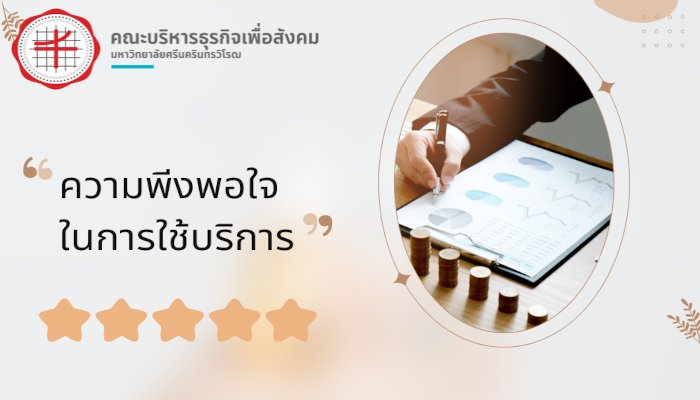
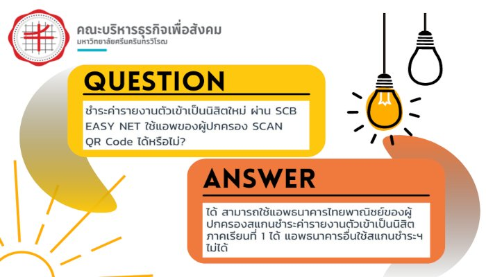

คณะบริหารธุรกิจเพื่อสังคม มหาวิทยาลัยศรีนครินทรวิโรฒ
องค์กรชั้นนำแห่งการเรียนรู้ด้านบริหารธุรกิจเพื่อความยั่งยืนของสังคม
Admissions 2570 · BAS TCAS70
เปิดรับสมัครนิสิตใหม่ ปีการศึกษา 2570
Faculty Identity · B · A · S
อัตลักษณ์คณะ
กรอบแนวคิดสามด้านที่กำหนดวิธีการเรียนการสอน การทำงาน และการวัดความสำเร็จของคณะ
- Business Excellenceความเป็นเลิศทางธุรกิจ
- Accountabilityความรับผิดชอบ
- Social Engagementการมีส่วนร่วมทางสังคม
Academic
ค้นหาเส้นทางการศึกษาที่เหมาะกับคุณ

Get to Know Us
รู้จักคณะบริหารธุรกิจเพื่อสังคม
Faculty of Business Administration for Society
การศึกษาด้านบริหารธุรกิจที่วัดความสำเร็จจากผลกระทบต่อสังคม ไม่ใช่แค่ตัวเลขในงบการเงิน
คณะอิสระของ มศว ครอบคลุมการบัญชีและการเงิน · การตลาดและการจัดการ · บริหารธุรกิจ — นำโดยคณบดี ดร.ณัฐินี ฐานะจาโร
อ่านเพิ่มเติมเกี่ยวกับ BAS SWU- 3,776นิสิตทั้งหมดTotal students
- 3,420ปริญญาตรีBachelor's degree
- 339ปริญญาโทMaster's degree
- 17ปริญญาเอกDoctoral
- 38อาจารย์ประจำFaculty members
- 9หลักสูตรDegree programs

News & Events
ข่าวและกิจกรรม

กิจกรรม “เสริมสร้างสุขภาวะสิ่งแวดล้อม มุ่งสู่เป้าหมายความยั่งยืน” ภายใต้โครงการ Asok Model
(เปิดในแท็บใหม่)
BAS Green Office x SWU Green University โครงการ “หน้าบ้าน น่ามอง”
(เปิดในแท็บใหม่)รับสมัครนิสิตเข้าร่วมโครงการ Essex Business School Summer Sessions 2025
โครงการภาคฤดูร้อนกับ Essex Business School สหราชอาณาจักร (เปิดในแท็บใหม่)
Ready to Explore Germany? Summer Semester 2025 Exchange Program at Neu-Ulm University of Applied Sciences (HNU)
ภาคเรียนแลกเปลี่ยนที่ HNU ประเทศเยอรมนี (เปิดในแท็บใหม่)ยังไม่มีข่าวในหมวดนี้ · ดูข่าวทั้งหมด
BAS E-Newsletter
Stay Connected
ไม่พลาดทุกข่าวสารสำคัญ กิจกรรมเด่น และเรื่องราวความสำเร็จของชาวคณะฯ ที่รวบรวมไว้ให้คุณในรูปแบบจดหมายข่าวอิเล็กทรอนิกส์
Integrity & Transparency Assessment
การส่งเสริมคุณธรรมและความโปร่งใส (ITA)
ส่งเสริมค่านิยมความซื่อสัตย์และจิตสำนึกรับผิดชอบ เพื่อสร้างสังคมอุดมปัญญาที่ปราศจากการทุจริต และขับเคลื่อนคณะฯ ไปข้างหน้าอย่างสง่างาม
Services & Resources
บริการและข้อมูลสำหรับนิสิต
ช่องทางบริการที่ใช้บ่อย รวมไว้ในที่เดียว ตั้งแต่คู่มือ แบบประเมิน ไปจนถึงการสนับสนุนการศึกษา
-

ขอเชิญร่วมบริจาคเงินสนับสนุนการศึกษา
บริจาคผ่าน SWU Donation เพื่อสนับสนุนการศึกษาของนิสิต ใช้ลดหย่อนภาษีได้ 2 เท่า (เปิดในแท็บใหม่) -
คู่มือสำหรับนิสิต คู่มือปฏิบัติงาน/การให้บริการ
รวมคู่มือสำหรับนิสิต และคู่มือปฏิบัติงานและการให้บริการของคณะ (เปิดในแท็บใหม่) -

ความพึงพอใจในการใช้บริการ
ประเมินความพึงพอใจต่อบริการของคณะ ความเห็นของคุณช่วยให้เราปรับปรุงบริการได้ดีขึ้น (เปิดในแท็บใหม่) -

คำถามที่พบบ่อย
คำตอบสำหรับคำถามที่นิสิตและผู้สมัครถามบ่อย เช่น การสมัครและการชำระค่าธรรมเนียม -
ขั้นตอนจัดการเรื่องร้องเรียน
ส่งข้อเสนอแนะหรือข้อร้องเรียน พร้อมขั้นตอนการรับและจัดการเรื่องร้องเรียนของคณะ
Global Partnerships
เครือข่ายพันธมิตรทั่วโลก
Partners Around the World

- 23องค์กรOrganisations
- 6ประเทศCountries
- 2ภูมิภาคAsia · Europe
Asia
Thailand
18 องค์กรKing Mongkut's Institute of Technology Ladkrabang
Education
Faculty of Social Sciences, Srinakharinwirot University
Education
Rajinibon School
Education
Sarasas Witaed Nakhon Pathom School
Education